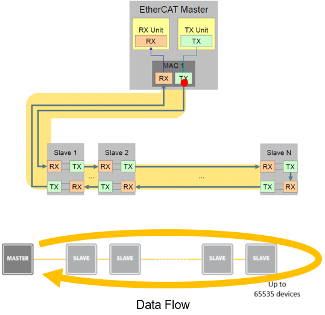
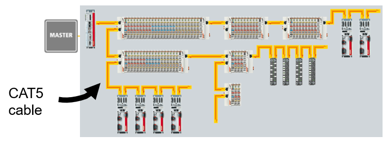
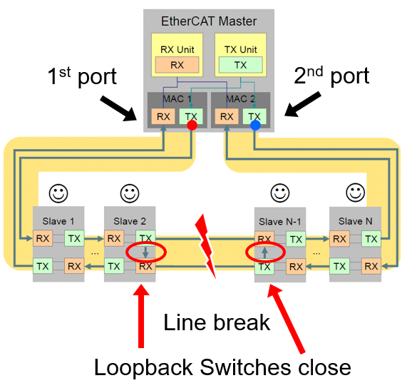
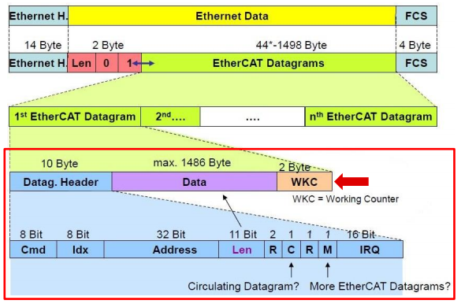
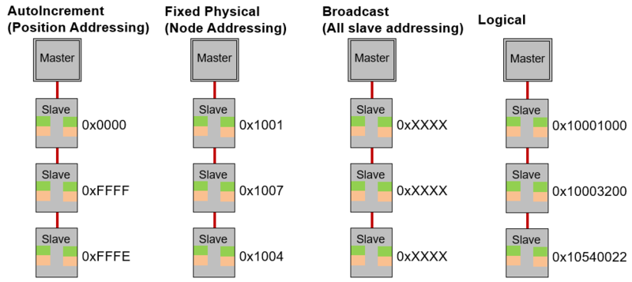

Ethernet for Control Automation Technology (EtherCAT)#
Ethernet for Control Automation Technology (EtherCAT®) is an Ethernet-based field bus system. It is an open technology covered under international standards (IEC61158, 61784, 61800, and ISO 15745)
Introduction#
Involves controller and target(s) setup where target nodes are physically connected daisy-chain style but logically operate on a loop.
EtherCAT specializes in precise, low jitter synchronization across target nodes (<= 1us)
Each target processes message data “on the fly” as the frame passes from one node to the next
Uses IEEE 802.3 Ethernet physical layer and standard Ethernet frames

Physical Network Structure#
Physically: Target nodes can have multiple configurations (Line, Tree,Star, etc.)
Logically: Target nodes are connected as a daisy-chain and operate on a loop
Duplex communication: CAT5 (Ethernet) cable has two different pairs (outgoing pair and return path)
Only 1 Ethernet port needed at the controller to connect to network

Network Redundancy#
Requires 2nd Controller Ethernet port
Redundant data on 2nd port (Never used unless there’s a line break)
Loopback switches in target nodes close to maintain the loop in the event “downstream” nodes fail

Frame Structure#
1 or more Datagrams per frame.
Datagram consists of a Header, Data, and “Working Counter”
Header contains:
Command, address, length, and various check bits
The Working Counter (WKC) is the # of interactions contained in a given datagram.
WC is incremented appropriately by each target. If the WKC in the frame returned to the controller isn’t what’s expected, then there’s a problem somewhere in the network

Target Node Addressing#

AutoIncrement (Position Addressing)
Used typically only during start-up to scan the network
Position address of the addressed target is stored as negative value
Each target increments the address. The target that reads this address as zero is addressed
Fixed Physical (Node Addressing)
Typically used for register access to individual targets that have already been identified
The configured target address is assigned by the controller at start up and cannot be changed by the EtherCAT target
Broadcast Addressing (All target addressing)
Used for initializing all target devices
Addresses all targets in the network
Logical Addressing
Used to reduce necessary content in process data communication
All targets read from and write to the same logical address range of the EtherCAT datagram
Each target uses the FMMU to map data from the logical address to the local physical memory address
Resources#
Feedback
Please provide any feedback you may have about the content within C2000 Academy to: c2000_academy_feedback@list.ti.com